GeoNode 2.4 Install Instructions
August 27, 2014
- Obtain the GeoNode Install Package and unzip to a temporary folder
- Install Microsoft Visual C++ 2008 SP1 Redistributable Package (vcredist_x86.exe) located in the Prereq folder of the install package
- Install Java Runtime Envionrment (jre-7-windows-x64.exe) located in the Prereq folder.
- Set a JRE_HOME environment variable in advanced windows settings (e.g. C:\Program Files\java\jre7\)
- Install Python 2.7.7
- Use the default directory of C:\Python27
- Make sure python.exe is added to your path
- 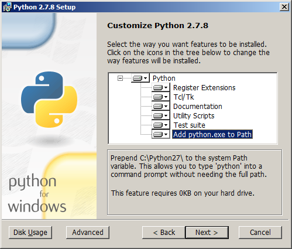
- Install PostgreSQL
- On the data directory screen seen below, select the location that you would like to store the data. Please be advised, you should pick a location where you can easily maintain your database over time. In a production environment this is likely not on the root volume (C:). Your database size may increase greatly over time. Pick a location where you can easily backup your data and expand the dedicated space..
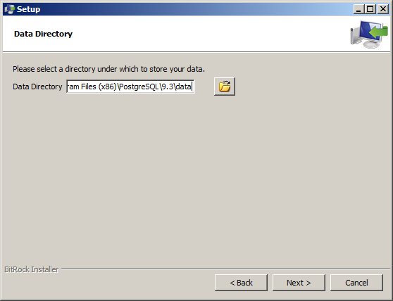
- Do not run StackBuilder by unchecking the box and clicking finish as demonstrated by the screen below.
- 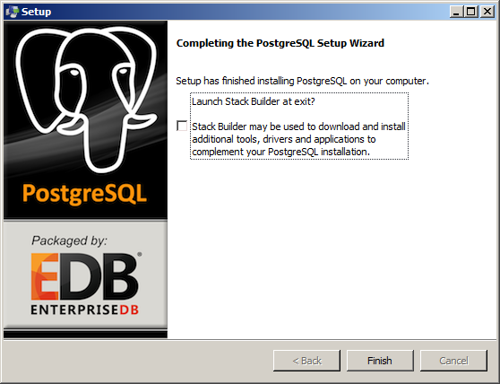
- Install PostGIS
- Do create a spatial database
- 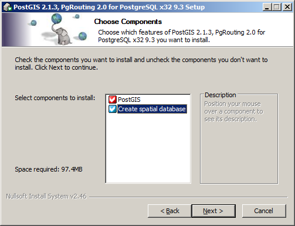
- And keep the default name for the spatial database as postgis_21_sample
- 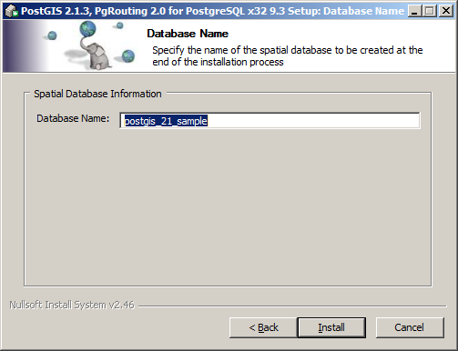
- Click yes to all prompts after the install to add Windows Environment Variables.
- Run Install.bat from the command line with Administrator privileges. You will be presented with a number of prompts. Please refer to the description of the variables below
- Geonode Directory - This is the base directory where Geonode will be installed. It will use roughly 500MB
- Geoserver data - This is where the bulk of the geodata will be stored including geogit repositories and imagery. If your deployment is imagery intensive, then this can use 100GB or more.
- Base URL - the URL that this will use for the system. If just using this as a test install, please use localhost. Otherwise, use a registered domain or local DNS entry.
- Database Name: The name of the GeoNode site Database
- GIS Database name: The name of the database to be used as the PostGIS storage
- PostgreSQL user name: Defined during the PostgreSQL/PostGIS install. By default it is postgres
- PostgreSQL password: Used to create the databases. It was defined during the PostgreSQL/PostGIS install as well.
- Finally, you may be prompted if you are copying a file or directory. Always enter “D” for directory.
- You have now copied all the necessary files, and you will notice that there is a “(venv)” in front of the command prompt.
- 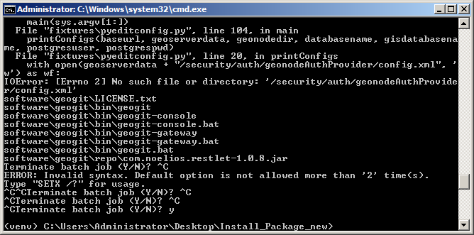
- Using the same command prompt navigate to your Geonode Directory, then go to the “GeoNode” directory within your install as below
- 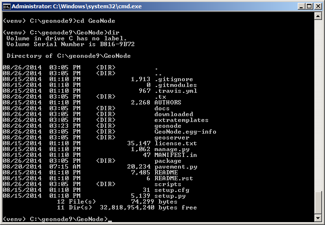
- Then, run “python manage.py syncdb” to build your database
- You will be prompted if you want to create a superuser. It is recommended you create one with a strong password.
- Finally, run “python manage.py collectstatic” and enter “yes” when prompted
- GeoNode relies on a Java based GeoServer to be running. It is recommended that you use the Windows Task Scheduler to manage this service.
- Start the Task Scheduler and create a new task.
- Mimic the settings below
- 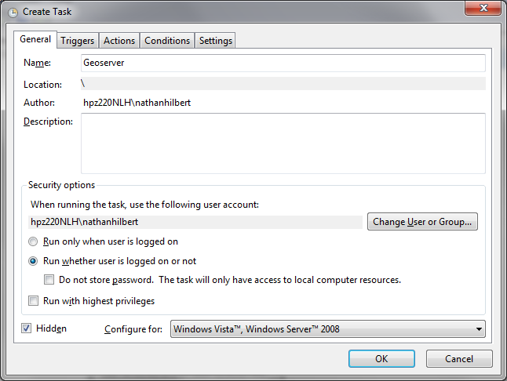
- 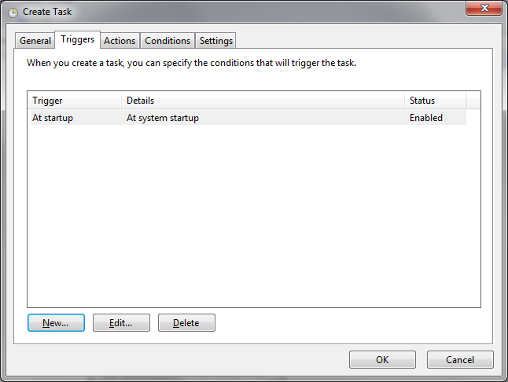
- Create a new action to start the batch file called state_geoserver.bat found in your GeoNode Install Directory
- 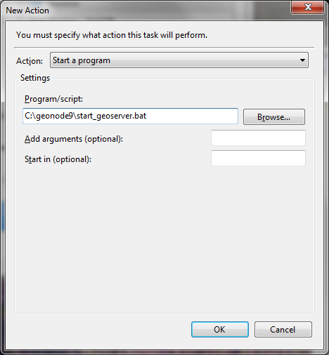
- 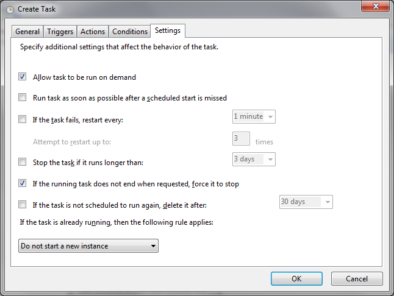
- You will now see a GeoServer task in your Task Scheduler Library. Right click and run the task. Check the server has started by opening browser and going to “http://localhost:8080/geoserver”. If the GeoServer website is visible, you have successfully installed GeoServer.
- 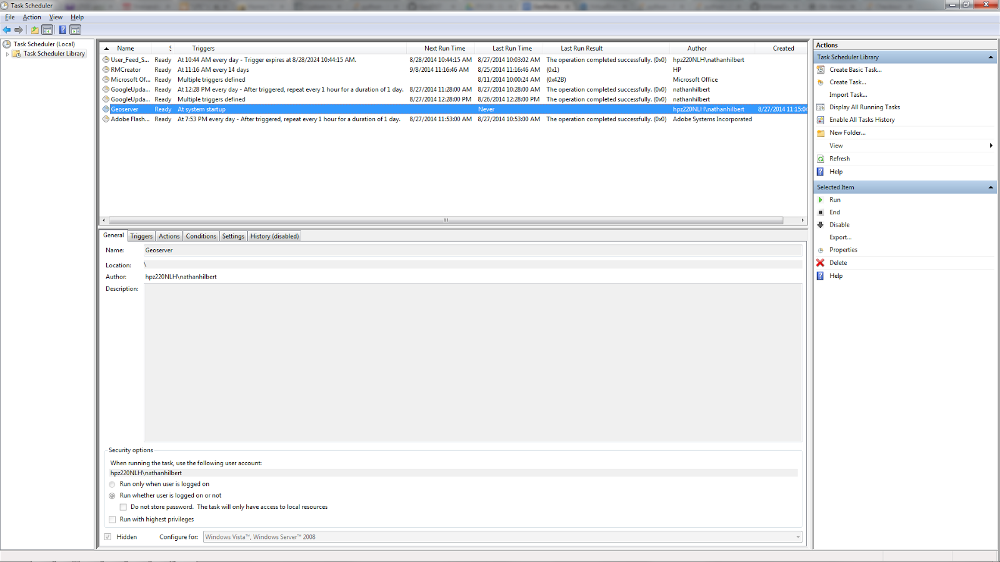
- Finally, install GeoGit. The install script already transferred the files, but it did not add the appropriate variables to the Windows Environment Path Variable
- Ensure that the JRE_HOME variable is set. If not add it with the value of C:\Program Files\Java\jre7
- To your system path variable add “%JRE_HOME%\bin\;C:\Program Files (x86)\geogit\bin\;”
- Open a new command prompt, and run geogit. A list of commands should show as below.
- 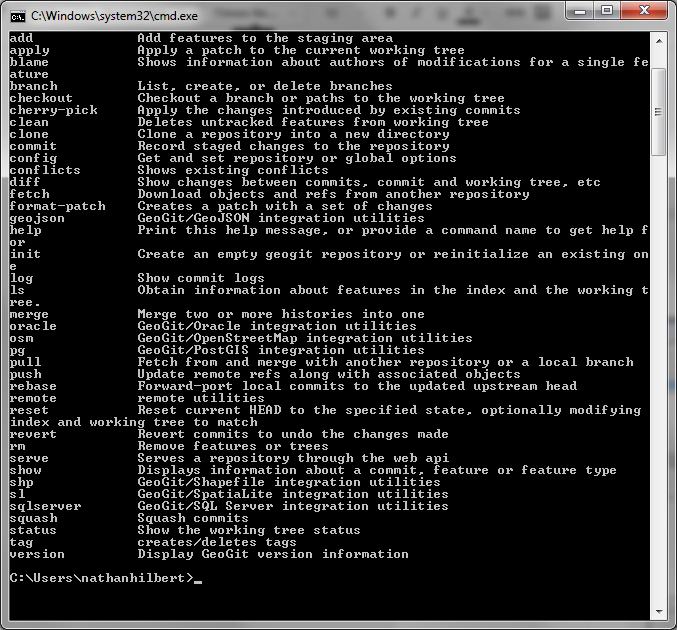
- Finally, for GeoServer to work with GeoGit, two global variables must be set. In the command prompt run the following
- geogit config --global user.name “YourUsername”
- geogit config --global user.email “YourEmail”
- You need to set up the datastores in the GeoServer
- Go to the base url and log in with your admin account, then go to the upper right and select GeoServer. You should automatically be signed in to GeoServer. Click on Stores to the right and add a new store
- 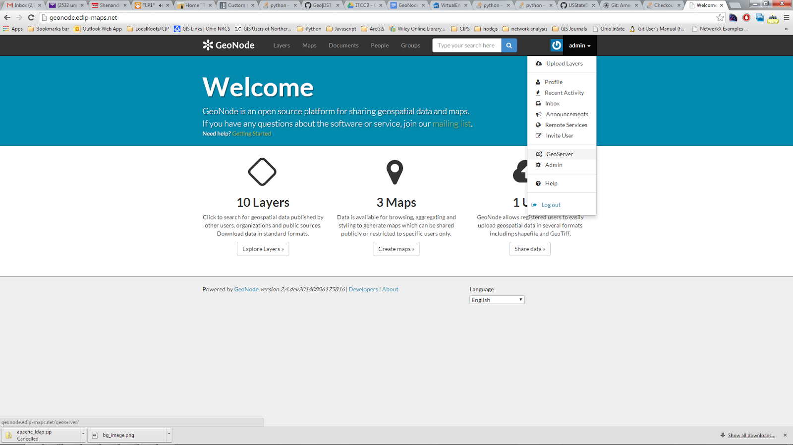
- Set up the PostGIS datastore
- 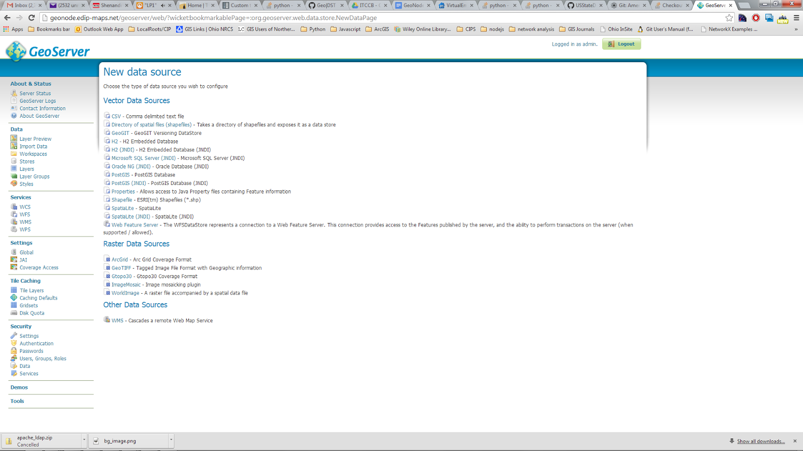
- Enter the following settings changing your database user name and password if neccessary.
- 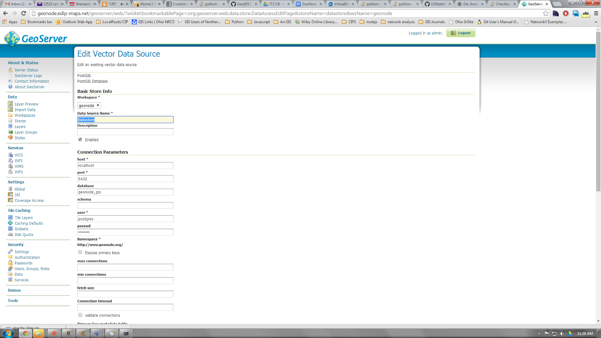
- Optionally, you can also set up GeoGit datastores. Currently, new GeoGit datastores will be created in the GeoServer data directory created in the install process.
- Configure LDAP settings for single sign on Active Directory Authentication.
- These settings are found in you GeoNode Install Directory\GeoNode\geonode\local_settings.py at the bottom.
- The settings are commented for explanation. A working knowledge of the Active Directory structure is required for these settings.